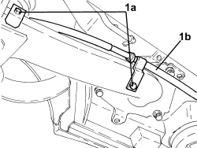
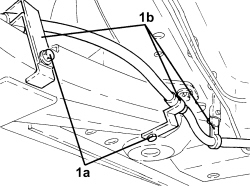

3340B67 RIGID PIPE FROM CONNECTOR TO RIGHT REAR BRAKE - R.R.
- Path
- Procedures > 33 BRAKES > 3340 ANTI-LOCK BRAKING SYSTEM (ABS) > 3340B ABS SYSTEM PIPES > 3340B67 RIGID PIPE FROM CONNECTOR TO RIGHT REAR BRAKE - R.R.
- Kind
- repair procedure (removal / refitting; the operation number is the code)
- Applies to
- all engines; all production periods
- Interactive page
- https://sloeber94.github.io/elrnDB-aBrrSpdr/en/#/946002153
Applies to: engines: 3.2 JTS; all production periods
 Removing
Removing
 Refitting
RefittingOp. 4450B13 REAR WHEELS (TWO) - R.R
Op. 2720C10 DIFFERENTIAL UNIT - R.R.
Op. 2410A18 TRANSMISSION WITH JOINTS INCLUDED - R.R.
Op. 7050A20
Op. 1040A10 FUEL TANK - R + R AND DECANT FUEL
- Unscrew the brake-clutch fluid reservoir plug and fit the tool.
Tool | Description | Function | Validity |
|---|---|---|---|
2000001400 | Plug | Brake/ clutch system vacuum |
1. Undo the fastenings (1a) and move the handbrake cable (1b) to one side.

Applies to: engines: 3.2 JTS; all production periods
1. Disconnect the intermediate connector for the rigid pipe.

Applies to: engines: 3.2 JTS; all production periods
1. Disconnect the connector connecting the rigid pipe with the flexible pipe to the right rear brake caliper.

Applies to: engines: 3.2 JTS; all production periods
- Disconnect the rigid pipe from the right rear brake connector from the clips and remove it.
Applies to: engines: 3.2 JTS; all production periods
Refitting
Removing- Place the right rear rigid brake pipe in its housing and connect it to the retaining clips.
- Connect the rear connector for the rigid pipe to the right rear brake caliper flexible pipe and tighten to the recommended torque.
Component | Fastening | dia | Value (daNm) | Validity |
|---|---|---|---|---|
Brake pipe connectors | Connector | M10/M12 | 1.4 ÷ 1.8 |
- Fit the brackets securing the handbrake cable to the rear suspension left longitudinal arm.
- Connect the right rear rigid brake pipe intermediate connector and tighten to the recommended torque.
Component | Fastening | dia | Value (daNm) | Validity |
|---|---|---|---|---|
Brake pipe connectors | Connector | M10/M12 | 1.4 ÷ 1.8 |
Op. 1040A10 FUEL TANK - R + R AND DECANT FUEL
Op. 7050A20
Op. 2410A18 TRANSMISSION WITH JOINTS INCLUDED - R.R.
Op. 2720C10 DIFFERENTIAL UNIT - R.R.
Applies to: engines: 2.2 JTS, 2.4 JTD 20v; all production periods
Removing
RefittingOp. 1040A10 FUEL TANK - R + R AND DECANT FUEL
Op. 1076B72 INTERMEDIATE EXHAUST PIPE WITH HOSE SECTION - R+R
Op. 4450B08 RIGHT REAR WHEEL - R.R
- Raise the vehicle and disconnect the intermediate connector for the rigid pipe.
1. Disconnect the handbrake cable from the right rear caliper.

Applies to: engines: 2.2 JTS, 2.4 JTD 20v; all production periods
1. Undo the bolts (1a) and remove the handbrake cable from the rear suspension longitudinal arm (1b).

Applies to: engines: 2.2 JTS, 2.4 JTD 20v; all production periods
- Disconnect the connector connecting the rigid pipe with the flexible pipe to the brake caliper.
- Release the rigid pipe from the fastening clips and remove it.
Applies to: engines: 2.2 JTS, 2.4 JTD 20v; all production periods
Refitting
Removing- Position the rigid pipe and secure it using the clips.
- Connect the rigid pipe to the brake caliper flexible pipe and tighten the connector to the recommended torque.
Component | Fastening | dia | Value (daNm) | Validity |
|---|---|---|---|---|
Brake pipe connectors | Connector | M10/M12 | 1.4 ÷ 1.8 |
- Fit the brackets for the handbrake cable to the rear suspension longitudinal arm and secure them using the bolts.
- Connect the handbrake cable to the right rear caliper.
- Connect the right rear rigid brake pipe intermediate connector to the recommended torque.
Component | Fastening | dia | Value (daNm) | Validity |
|---|---|---|---|---|
Brake pipe connectors | Connector | M10/M12 | 1.4 ÷ 1.8 |
Op. 4450B08 RIGHT REAR WHEEL - R.R
Op. 1076B72 INTERMEDIATE EXHAUST PIPE WITH HOSE SECTION - R+R